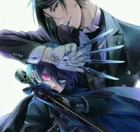

Serial stworzony na podstawie mangi Yana Toboso.Akcja dzieje się w Wiktoriańskiej Anglii, opowiada o nastoletnim chłopcu,Cielu Pantomhive, który stracił rodzinę w makabrycznych i tajemniczych okolicznościach.On sam został porwany przez członków mrocznej sekty. W przypływie rozpaczy wyrzeka się Boga i zawiera pakt z demonem, Sebastianem Michaelisem. Pragnie rozwikłać zagadkę morderstwa swoich rodziców nawet za cenę własnej duszy.Tak zaczyna się wspólna droga chłopca i jego piekielnego lokaja, pełna niebezpiecznych zwrotów akcji i rozwiązywania detektywistycznych zagadek.
Uwielbiam tę animę głownie ze względu na trochę mroczną atmosferę, piękną kreskę i świetne, niejednoznaczne postacie (zwłaszcza Sebastiana Michaelisa). Jest wciągająca, chwilami zabawna i gorąco polecam ją jako pierwszą.
